Guía The Legend of Zelda: Ocarina of Time
Después de que el Árbol Deku te dé la Esmeralda de los Kokiri, morirá y te dirá que vayas al castillo de Hyrule.
Cuando aparezcas en el Bosque Kokiri, ve al lado oeste del mapa y encontrarás una cueva que te lleva al exterior. Nada más salir del bosque te encontrarás con Saria, quien se despedirá de ti y te regalará la Ocarina de las Hadas.
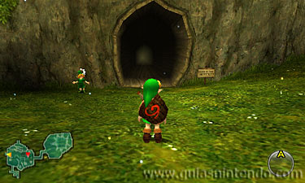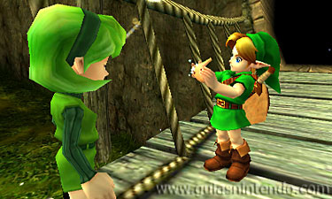
A continuación, sigue avanzando y antes de llegar a la llanura de Hyrule te encontrarás con un búho que te dará información. Te dirá que para llegar al castillo de Hyrule sigas el sendero. Cruza la llanura siguiendo dicho sendero y así llegarás al castillo. Si llegas de noche, el puente levadizo estará subido y no podrás entrar, por lo que deberás esperar a que amanezca.
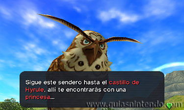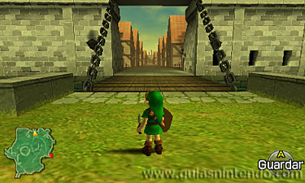
Al cruzar el puente levadizo del castillo llegarás a la plaza del mercado, y en el centro, junto a la fuente, te encontrarás con una niña llamada Malon (es la hija del dueño del rancho Lon Lon). Habla con ella y después métete por el camino que se ve al fondo para llegar al castillo de Hyrule.
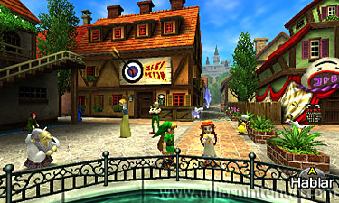
Al intentar entrar al castillo tendrás un problema, ya que hay una reja y un soldado que te impide pasar. Desde el lugar donde se encuentra el soldado vuelve hacia atrás y verás una enredadera en la pared por la que puedes subir a una zona elevada.
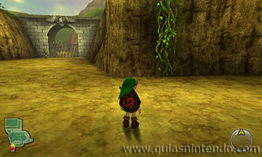
Cuando llegues a la parte de arriba de la enredadera, avanza y sobre el puente que está encima de la reja encontrarás un hueco para llegar al otro lado. Luego debes avanzar sin que te vea ningún soldado, ya que si te ven te echarán (primero avanza por el camino y antes de llegar a los dos primeros soldados sube por la rampa de la izquierda. Después procura evitar los caminos).
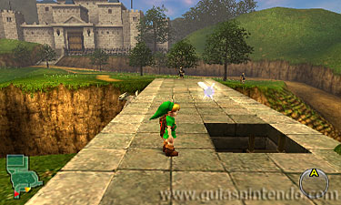
En la escalera de entrada del castillo hay varios soldados, por lo que debes seguir hacia la izquierda para encontrar una enredadera en la pared. Sube por ella y llegarás al foso del castillo. Métete en el agua y podrás llegar hasta la parte derecha sin ser visto.
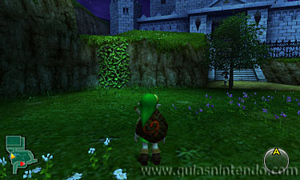
Cuando llegues al lado derecho del foso, sal de él y sigue avanzando hasta el fondo para encontrar a un hombre que está dormido en el suelo (es Talon, el padre de la niña con la que hablaste en la plaza del mercado). Si intentas hablar con él no te contestará, solo hablará en sueños.
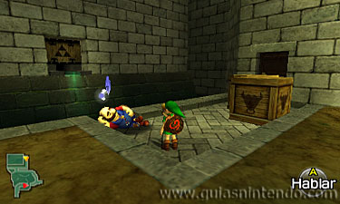
A continuación, vuelve hacia atrás para llegar de nuevo a la enredadera por donde subiste para atravesar la reja del castillo y al lado te encontrarás con Malon, la hija del hombre dormido. Al hablar con ella te dará un huevo extraño y cuando pase un día, ese huevo se convertirá en un Cuco.
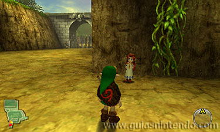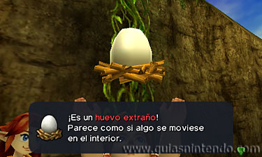
Cuando el huevo se haya convertido en cuco, ve de nuevo a donde estaba el hombre dormido (Talon) y usa el cuco junto a él para que se despierte (para hacerlo, debes asignarlo en objetos a uno de los botones). Luego habla con él y cuando termines se irá corriendo.
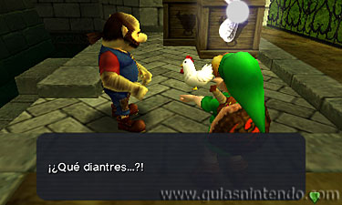
A continuación, debes empujar las dos cajas que estaban al lado de Talon para hacer que caigan en una plataforma que está dentro del foso del agua (para empujarlas, primero debes agarrarlas pulsando el botón "A" a su lado y después debes tirar de ellas o empujarlas).
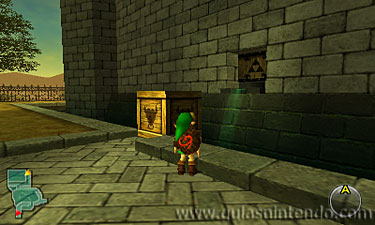
Cuando las cajas estén dentro del foso, súbete en ellas y salta para meterte por el agujero de la pared por donde sale agua. Así llegarás al patio del castillo, al cual deberás entrar cuando todavía sea de día o de lo contrario no podrás avanzar por él.
Dentro del patio verás a muchos soldados vigilando, por lo que tendrás que evitar que te vean. Si te descubren, te echarán del castillo y tendrás que volver a repetir todo el camino.
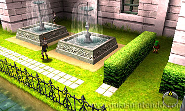
Al final del recorrido encontrarás a la Princesa Zelda. Habla con ella y cuando te pregunte si tienes la Piedra Espiritual, contesta que "Sí". Seguidamente te contará la leyenda de las tres Diosas y de la Trifuerza y también te dirá que para poder abrir la puerta del Templo del Tiempo necesitarás las tres Piedras Espirituales (ya tienes una de ellas, es la que te dio el Árbol Deku).

Cuando termine la conversación, la princesa te dará la Carta de Zelda.
A continuación, ve al oro lado del jardín y te encontrarás con Impa, la protectora de Zelda. Al hablar con ella te enseñará la primera canción de la ocarina: la Nana de Zelda.
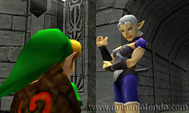
Tras hablar con Impa aparecerás automáticamente fuera del castillo. Ponte de espaldas a la salida del castillo y avanza hacia la izquierda. Cruza el puente que pasa sobre el río y sube por la escalera de la pared para llegar al pueblo Kakariko.
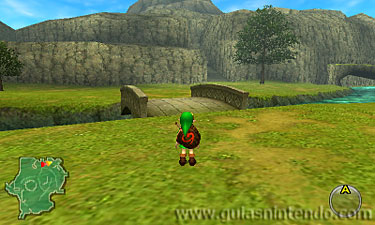
Dentro de Kakariko tienes que subir por la escalera que está en el lado izquierdo y arriba del todo encontrarás a un soldado delante de una reja. Enséñale al soldado la Carta de Zelda y abrirá la reja para que puedas acceder a la Montaña de la Muerte.
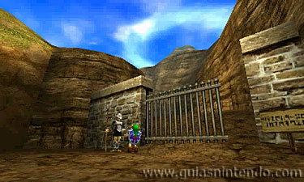
La primera parte del camino es el Sendero de la Muerte.
A mitad de camino encontrarás una cueva que está taponada por una gran roca y de momento no podrás entrar en ella, por lo que tendrás que seguir subiendo hasta llegar a la Ciudad Goron (la entrada de la ciudad es una cueva que está al final del recorrido).
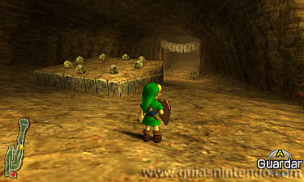
Dentro de la Ciudad Goron tienes que hablar con el jefe Darunia, el cual se encuentra en una sala a la que se llega entrando por la puerta cerrada que está en la parte inferior de la ciudad (la puerta tiene delante una alfombra). Para abrir la puerta donde está Darunia tienes que colocarte sobre la alfombra y usar la ocarina para tocar la Nana de Zelda.
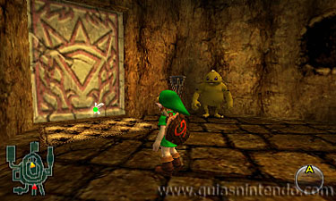
Cuando la puerta se abra, entra y habla con el jefe Darunia. Tras hablar con él vuelve a usar la ocarina a su lado para tocar la Nana de Zelda y te dirá que esa no es la canción que esperaba oír.
Para aprender la canción que quiere escuchar Darunia tendrás que ir al Bosque Perdido.
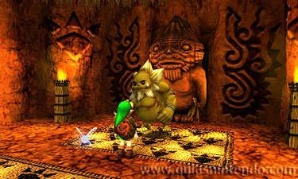
Para llegar al Bosque Perdido tienes que volver al Bosque Kokiri atravesando de nuevo la llanura de Hyrule. Una vez de vuelta tienes que subir a la plataforma que está más al norte (detrás de la casa de Mido, el jefe de los Kokiri) y allí encontrarás una pared por la que puedes trepar. Tras trepar por la pared, sigue el camino y arriba del todo encontrarás la entrada del Bosque Perdido.
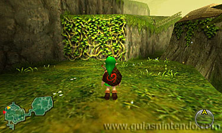
Al entrar en el Bosque Perdido verás que se trata de un laberinto. En la primera sala encontrarás tres cuevas por las que puedes continuar, pero si tomas el camino incorrecto aparecerás directamente fuera del bosque. Para saber el camino correcto debes acercarte a las cuevas y verás que al aproximarte a una de ellas la música suena bastante más alta.
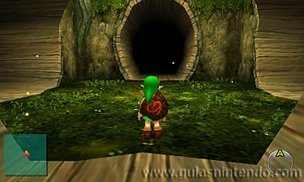
El camino detallado es el siguiente: en la primera habitación métete por la cueva de la derecha, en la siguiente por la cueva de la izquierda y en la siguiente continúa por la cueva de la derecha. Después sigue por la cueva de la izquierda y en la siguiente habitación por la cueva de enfrente. En la próxima ve por la cueva de la izquierda y en la siguiente por la cueva de la derecha. Siguiendo este camino llegarás a la pradera sagrada del bosque.
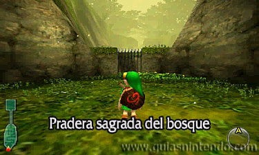
Al llegar a la pradera sagrada te encontrarás una reja que te impide avanzar y un nuevo enemigo: un lobo. Elimínalo golpeándole con la espada en el momento en que él te vaya a golpear con las pezuñas y la reja se abrirá para que puedas continuar (si golpeas al lobo en otro momento, la espada rebotará).
Tras pasar la reja tendrás que avanzar por una especie de laberinto que no tiene pérdida, y en él te encontrarás con varios enemigos que te lanzan nueces. A estos enemigos los puedes esquivar pasando por su lado o los puedes eliminar cubriéndote con el escudo para que las nueces reboten y salgan disparadas hacia ellos de nuevo (para cubrirte con el escudo tienes que pulsar el botón "R").
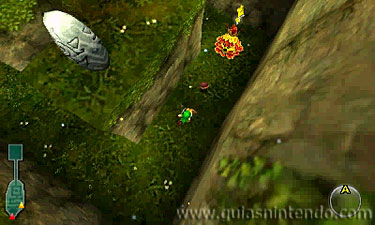
Al final del laberinto encontrarás una escalera que te llevan a una zona donde te volverás a encontrar con Saria. Al hablar con ella te preguntará si quieres tocar la ocarina con ella. Contesta que "Sí" y te enseñará la Canción de Saria.
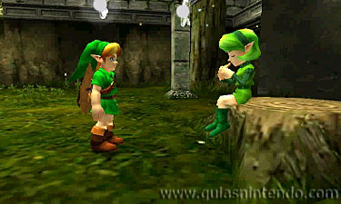
Cuando hayas aprendido esta canción, vuelve a la Ciudad Goron y entra de nuevo en la habitación de la parte inferior para encontrarte con Darunia. Ponte a su lado y usa la ocarina para tocar la Canción de Saria. Al oír la nueva canción, Darunia estará tan agradecido que te recompensará con el Brazalete de los Goron (con este brazalete podrás coger las flores bomba pulsando el botón "A" a su lado).
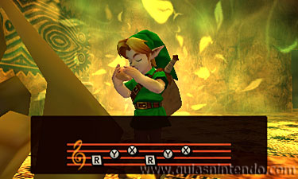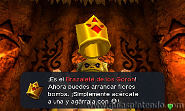
Cuando tengas el brazalete tendrás que salir de la Ciudad Goron para volver al sendero de la Montaña de la Muerte. Nada más salir de la ciudad, ve a la derecha y verás un goron junto al que hay una flor bomba.
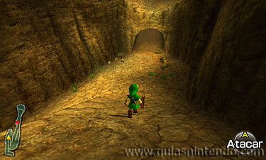
Como ahora tienes el brazalete, podrás coger la flor bomba pulsando el botón "A" a su lado. Cuando la tengas cogida, lánzala por encima de los dos postes más bajos que están a su lado y caerá junto a la gran roca que taponaba la cueva que viste anteriormente por la mitad del sendero (para lanzar la flor bomba, tienes que pulsar hacia adelante y el botón "A"). Al explotar la bomba, la gran roca se destruirá y podrás meterte en la cueva de los dodongos.
.jpg)